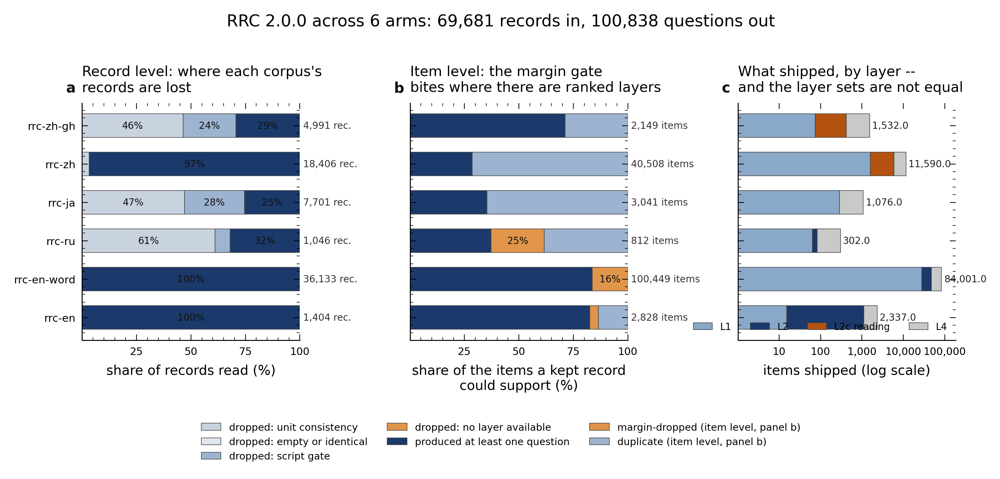
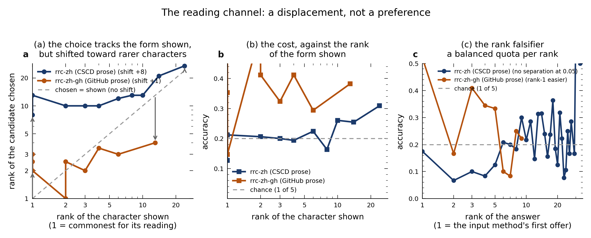

Root Recovery Corpus — Technical Report
Introduction
Motivation. A language model that answers under a confidence gate fails in two different ways, and only one of them is usually studied. It can be wrong and say so, in which case the gate declines and the cost is availability; or it can be wrong and be confident, in which case the error arrives looking like an answer. Which of the two happens is a property of the channel the text came through — how the intended form was transformed into the observed one, and how many other forms the transformation makes equally plausible. That quantity is script-dependent, and it is not observable from clean text: a corpus of clean sentences cannot distinguish a model that never errs from one that errs invisibly.
The object is the channel, not the error. Under the noisy-channel frame, an observer sees a corrupted form $s$ and must recover the intended form $r$; by Bayes the decision depends on $P(s \mid r)$ and $P(r)$, and only the first is a property of the channel. A resource built to support a claim about the channel must therefore expose the likelihood rather than merely supply corrupt strings — and it must supply, per script, the candidate structure: which other forms the channel admits, and whether they are ordered. §2 states the frame formally, including a proposition (§2.4) establishing that the ordering quantity used for the keyboard channel is identically zero on the Chinese reading channel, so a different quantity — the frequency rank in the character group the input method offers — is required there.
Why observed rather than generated. The published multilingual typo work this
report measures against implements a fixed set of operations over a fixed set of scripts, and every
one of those scripts is alphabetic, abjad or abugida. Two figures that are commonly quoted for
that work — how many operations it implements and how many scripts it supports — were not
confirmed by this report's bibliographic verification, and are therefore not restated
here (§8). The comparison below does not depend on either: run against this project's languages
those generators raise Unsupported language for Chinese and Japanese, and measured
against real typing the single mechanism they model —
substitution between adjacent keys — accounts for 9.2 % of observed edits, while deletion and
insertion together account for about two thirds (§4.6). Those generators are not defective; they
were built to inject a controlled perturbation, which is what an ablation needs. But a study built
on them measures robustness to adjacent-key substitution, and the inference from that to
"robustness to typing error" does not follow. A resource that supports the wider claim has to be
built from forms that people actually produced.
What the corpus is. The Root Recovery Corpus (RRC) is a fixed-choice resource built from records of observed human error, in six arms spanning four languages and four writing systems. Each item shows one corrupted form $s$ and five candidates, exactly one of which is the root; the task is to identify it. Because the answer is discrete and unique, chance is defined per item at $1/K = 0.20$ and accuracy and confidence are measurable on the same trial, which is what a calibration claim requires. Every item carries its layer, its difficulty under the channel's own measure, and the corpus it came from, so a result can be attributed to a named source rather than to a resource in general. The construction is a filtration (§3): each stage can only remove items, and the count it removed is recorded, so the funnel from source records to shipped items is auditable at every step. Cardinalities, layer coverage, length and difficulty distributions and the measured keystroke channel are in §4.
What it makes testable. The claim the corpus exists to test is that a model's errors are visible to its own confidence as a function of the orthographic depth of the script it reads, rather than of the model. RRC is the parameter-estimation layer of that chain: it supplies the channel's candidate structure and a per-item ceiling against which a calibration result can be read. Three falsifiers are available with no new data and their criteria are fixed in advance (§5.3) — no separation on the ranked layers; no rank effect on the reading channel, which would make that layer uninformative rather than hard; and a cross-script difference that does not survive restricting to shared layers. The third has already been answered structurally: no two arms share a ranked layer, so the strongest comparison the corpus currently supports is on its control layer, and this is reported as a limit rather than worked around.
What it does not claim. Orthographic depth is the hypothesis, not a label the corpus carries: no item is annotated with it, and the corpus supplies a measurable candidate structure instead (§2.7). RRC does not support statements about $P(r)$, about population error rates, or about parity between scripts — the writers are not a characterised sample, the arms are not aligned to one another, and their layer coverage differs. Each of these is stated where it applies and again in §6.1, because a limit that is discovered by a reader rather than disclosed by the authors is a defect in the resource.
How to read this report. §1 lists what the corpus is built from and what it is built with — data sources, instruments, internal machinery, and the artefacts every figure is read from. §2 is the formal framework. §3 is the construction. §4 is the numeric profile. §5 states what has been measured and what would falsify the central claim. §6 is quality control. §7 reproduces every number from scratch and §8 carries the references. Every figure in §4 is read from a shipped artefact at load time rather than transcribed, and the page reports the age of the data it is showing.
1 · Sources, instruments and dependencies
A corpus is only meaningful relative to the instruments that read it. Section 1.1
lists the data; 1.2 the tools that compute with it; 1.3 the internal machinery; 1.4 the artefacts
every figure is read from. The instrument list is derived from the imports in
scripts/ rather than written by hand, and the build fails if an import is
undeclared — a tool that computes a number has to be named as surely as the corpus that supplies
it. Full citations are in §8.
1.1 Data sources
Every arm is built from a corpus of observed human error. No arm is built from generated noise, and §8 lists the sources that were considered and rejected together with the reason — a corpus is defined as much by what it excludes, and a rejection stated without its reason is an omission. The table gives where each source came from, what was taken from it, and the licence that travels with any redistribution. That last column matters: the largest single source is non-commercial, so the constraint is on reuse of the data rather than on this analysis, and it is stated rather than buried.
1.2 Instruments and libraries
Third-party tools, resolved to a distribution and a version, with what each one computes and where it is used. A row whose version is absent was imported but its distribution could not be resolved on this host.
1.3 Internal modules
The project's own modules. They are listed apart from §1.2 so that a reader citing this report's instruments does not have to separate an external tool from a local one, and so that §1.2 can be read as a dependency list in the ordinary sense.
1.4 Artefacts and vendored standards
Artefacts every figure is read from
Vendored upstream data
2 · Formal framework
This section fixes the estimand before anything is measured, so that the measurement in §5 is able to fail. That ordering is the paradigm. The object of study here is a channel — a conditional distribution over what a writer produces given what they intended — and a model's accuracy on these items is evidence about that channel rather than the quantity being reported. A benchmark asks whether a model is good. This report asks what a corpus can and cannot show, and it is written so that a reader who disagrees with the answer can see exactly which step they would have to reject.
Three classical results carry the framework. Each is used only where it applies, and each constrains something specific:
- The noisy channel. Treating a corrupted form as evidence about an intended form is the decomposition of Shannon's communication model, and applying it to orthographic error is the founding move of statistical spelling correction (Kernighan, Church & Gale, 1990). §2.1 writes it in the form this corpus can actually estimate.
- Orthographic depth. The claim that writing systems differ in how transparently they encode sound, and that this changes what reading requires, is the orthographic depth hypothesis (Katz & Frost, 1992); (Frost, 1994). It enters here as the hypothesis under test, not as a premise: §2.7 is explicit that depth is not a label this corpus carries.
- Neighbourhood confusability. That the difficulty of a form depends on how many similar forms exist is the orthographic-neighbourhood effect (Coltheart, Davelaar, Jonasson & Besner, 1977). It is why the ranked layers use a nearest-neighbour decoy rule — and §2.4 shows why that rule cannot be carried to the reading channel unchanged.
Two consequences govern how the rest of the report reads. First, a quantity is reported only where the corpus can identify it. §2.8 states what the framework cannot support, and §5.3 states in advance what would falsify a depth claim; both are written before the results so that neither can be adjusted after them. Second, the literature is used critically rather than as authority. Where a published instrument covers only part of a phenomenon, this report measures the size of the uncovered part instead of assuming it away: §5.1 does that for the keyboard-noise generators, and §4.6 measures the real channel directly against the rate its own publisher reported.
2.1 The channel
A writer intends a form $r \in \mathcal{R}$ — the root. An error-generating process, the channel $C$, emits an observed form $s \sim C(\cdot \mid r)$ with $s \in \Sigma^{*}$, where $\Sigma$ is the script's character set. A reader observing $s$ must recover $r$. By Bayes,
$$P(r \mid s) \;=\; \frac{P(s \mid r)\,P(r)}{\sum_{r' \in \mathcal{R}} P(s \mid r')\,P(r')}.$$Two quantities are separable and both are needed: the likelihood $P(s \mid r)$, a property of the channel, and the prior $P(r)$, a property of the language. A corpus that supports a claim about the channel must expose the likelihood; one that merely supplies corrupted strings conflates the two, and a difference between two such corpora cannot then be attributed to either.
2.2 Why the fixed-choice form is the right elicitation
RRC supplies, with each $s$, a candidate set $\mathcal{A}(s) \subset \mathcal{R}$ with $|\mathcal{A}(s)| = K = 5$ and $r \in \mathcal{A}(s)$ exactly once. The item asks for $\arg\max_{a \in \mathcal{A}(s)} P(a \mid s)$. Assuming a flat prior over the supplied candidates — which is what presenting them as equally available asserts — the decision reduces to
$$\arg\max_{a \in \mathcal{A}(s)} P(s \mid a),$$so the item is a discrete likelihood comparison, not a generation task. Three consequences follow, and each is why this form was chosen:
- Chance is defined per item at $1/K = 0.20$, not per corpus.
- A per-item ceiling exists: one correct answer, so accuracy and confidence are measurable on the same trial — which is what a calibration claim requires.
- The candidate space is supplied, not inferred, so a failure cannot be attributed to a failure of recall.
2.3 Difficulty: the margin, and where it is defined
Let $d : \mathcal{R} \times \Sigma^{*} \to \mathbb{R}$ be a similarity. Define the margin
$$m(s) \;=\; d(r, s) \;-\; \max_{a \in \mathcal{A}(s),\, a \neq r} d(a, s).$$$m(s) > 0$ means the stated metric alone identifies the truth. $m(s) \le 0$ means some decoy fits the observation at least as well, and the item then has no answer under that metric. The builder requires $m > 0$ on the ranked layers and records how many items were removed. This is a statement about a metric, not about truth: an item with $m \le 0$ may still have a unique true root. It is excluded because the corpus cannot then claim that metric as its difficulty scale.
2.4 The margin is identically zero on the reading channel
If $\mathcal{A}(s)$ is the set of characters sharing the reading of the errored position, then $m(s) = 0$ for every item, under either natural choice of $d$.
Proof. By the membership condition, $\mathrm{rd}(a) = \mathrm{rd}(r)$ for every $a \in \mathcal{A}(s)$.
Case 1 — $d$ reading-based. Then $d(a,s) = d(r,s)$ for every $a$, so $\max_a d(a,s) = d(r,s)$ and $m = 0$.
Case 2 — $d$ glyph-based; take the character-bigram Dice coefficient. For a single character $x$ the bigram set is $\{x\}$, so for distinct characters $|\,\mathrm{bi}(x) \cap \mathrm{bi}(y)\,| = 0$ and $d(x,y) = 0$. Elements of $\mathcal{A}(s)$ are distinct characters, so every term vanishes and $m = 0$. $\square$
The margin is therefore not a quantity that is merely hard to estimate on this layer — it is
identically zero, because the channel's candidates are exchangeable by
construction. Recording margin: null is the accurate record; computing a zero and
averaging it would report a difficulty the layer does not have. This is why the manifest scopes the
validity constraint to the ranked layers and states that scope explicitly.
2.5 The reading channel's actual difficulty: frequency rank
An input method presents candidates ordered by frequency. Let
$$G(\rho) = (c_1, c_2, \dots, c_n), \qquad \mathrm{freq}(c_1) \ge \mathrm{freq}(c_2) \ge \dots \ge \mathrm{freq}(c_n)$$be the characters carrying reading $\rho$, so ordered. Define the item's difficulty as the root's rank,
$$\mathrm{rank}(r) \;=\; \min\{\,i : c_i = r\,\}, \qquad 1 \le \mathrm{rank}(r) \le n .$$Rank $1$ is the character the input method offers first, making the choice nearly free; $\mathrm{rank} = n$ is the last candidate, the hardest the channel can be. Unlike the margin, this quantity exists and varies on this layer, and it is estimated from the same corpus the items are drawn from — which is also the correct denominator, since the channel's difficulty is defined relative to the domain the writer is typing in, not to the language in general.
The item's chance level is $1/K = 1/5$, while the channel's own choice set has size $n$, so the channel's chance level is $1/n$. Measured here, $\mathrm{median}(n) = 14$, giving $1/14 \approx 0.071$. A model scoring $0.20$ on these items is therefore not at chance in the channel — it is roughly $2.8\times$ above it.
Presenting five options where the writer faced fourteen compresses the channel, and this must be stated wherever an accuracy figure from this layer is compared with one from another. It is a property of the elicitation, not of the language.
2.6 The two axes, and why one list would not do
A layer is a point in the product
$$\text{layer} \;=\; \underbrace{\text{operation}}_{\{\text{sub},\,\text{ins},\,\text{del},\, \text{trans}\}} \;\times\; \underbrace{\text{channel}}_{\text{script-dependent}} .$$The four operations are not this project's invention; they are the standard four of the published error taxonomy this report follows, which rests on one source (§8). The channel is what the script determines, and the two channels that are not keyboard-adjacency are the ones no published generator covers:
| script class | candidate structure $\mathcal{A}(s)$ | published basis |
|---|---|---|
| alphabetic, abjad, abugida | the roots one adjacent-key edit away | MulTypo (Zhao, Liu, Altinger, Schütze & Hedderich, ACL 2026) over kbdlayout.info |
| Han (Hans) | characters sharing the reading of the errored position | not published measured here |
| Japanese (Jpan) | the kana flick group | not published from CLDR flick data |
Run on this project's languages, the published generator produces typos for english and russian and raises Unsupported language for chinese and japanese. The non-alphabetic rows are the part of this design for which no prior instrument exists.
2.7 Depth is the hypothesis, not a label the corpus carries
Orthographic depth — the regularity of the grapheme-to-phoneme mapping — is the quantity the research question is about. It is not a property this corpus encodes, and no item is labelled with it. What the corpus supplies per arm is the channel's candidate structure: how many forms are admissible, and whether they are ranked. That is measurable, and it is what a depth claim has to be read against. Stating it the other way round — assigning a depth label and then citing the label as a finding — would be assuming the conclusion.
2.8 What the corpus can and cannot support
$$\text{RRC supports } P(s \mid r) \text{ per script, with a per-item ceiling.}$$ $$\text{RRC does not support } P(r), \text{ population error rates, or cross-script parity.}$$The first is what a channel parameter estimate is. The second follows from the construction: the writers are not a characterised sample, the arms are not aligned, and the layers are not the same across arms — so an arm difference confounds script with layer coverage until that is handled explicitly.
3 · Construction as a filtration
Each stage is a map that can only remove items, and the count it removed is recorded, so the funnel from source records to shipped items is auditable at every step.

Four gates deserve a note. The unit-consistency gate fires before every
other count, and it is the largest single loss in the corpus: 7,167 of 69,681
records. On rrc-ja it removes 3,616 of 7,701, because that source's errors are frequently
whole-phrase rewrites whose state and root are not the same kind of object, so the
pair is not a substitution at all. The script-purity gate removes rows whose
writing system does not match the arm's declaration, which is why the Russian and GitHub-Chinese
arms lose the largest fractions there — their sources are the most mixed. No layer
available is a gate that exists and does not fire on this data: every record
surviving the two gates above yields at least one question. It is reported rather than dropped from
the account, because a count that is always zero is a measurement, not a gap — and stating it is what
shows the 3,616 records on rrc-ja were removed by unit consistency rather than by a
missing layer. The validity constraint acts at the item level, removing
ranked-layer items where a decoy fits the state at least as well as the
root; this narrows what the arm covers, and it is a real bias in what remains rather than a neutral
clean-up. Canonical form is applied once, at the boundary where records enter,
because the GitHub material carries CJK Compatibility Ideographs (U+FA08
for 行) — legacy encodings of characters Unicode also carries in unified form, so without
normalisation the same character appears as two different strings.
4 · Dataset profile
This section describes what was built, in numbers, before any model sees it. The order is deliberate: an arm's size, its layer coverage and its difficulty distribution are properties of the corpus, and a reader who wants to judge a result in §5 needs them first. Two features of this profile are findings in their own right rather than housekeeping. The layer sets are not equal across arms (§4.2), which restricts every cross-arm comparison to the one layer all six share. And the reading channel's difficulty is a frequency rank rather than a similarity margin (§4.5), which is why a cross-script comparison of "difficulty" here is not a comparison of like quantities — a point §5.11 depends on.
4.1 Arms
One row per arm: its language, its source, how many records entered, how many questions shipped, and the loss at each gate. Because the gates are recorded separately, an arm that is small because its source is script-mixed and an arm that is small because its errors are whole-phrase rewrites are distinguishable here — the first loses records to the script-purity gate, the second to unit consistency. They are not the same finding, and §3 says which arm is which.
4.2 Layer coverage
The layer sets are not equal across arms: four arms carry a ranked layer, two carry the reading layer, and only the unrelated-form control is common to all six. This is a constraint on what can be concluded rather than a defect in the build, and it is the reason every cross-arm claim in §5 is drawn on the control layer alone — the one comparison the design supports without also varying the layer.
4.3 Length distributions
Reported as ladders rather than means: the arms differ by orders of magnitude in object size, and a mean over such a mixture describes nothing in the data.
4.4 Difficulty on the ranked layers
The validity constraint, and the margin it produces, per arm. This is difficulty as the corpus encodes it, before any model is involved — the quantity §5 then tests behaviour against, on the understanding that a quantity nothing tracks is a quantity the channel defines and the model does not use.
4.5 The reading channel: group size and rank
The reading layer has no similarity margin at all: its candidates are homophones by construction, so a margin is 0 or 1 throughout and carries nothing. Its difficulty is therefore measured on the channel's own terms — how many characters the channel offers for a reading, and where the intended character falls when that group is ordered by corpus-observed frequency. Those are the two quantities an input method actually presents to a writer, and §2.5 derives why no string-similarity measure can stand in for them.
4.6 The measured keystroke channel

scripts/fig_keystroke_channel.py from
data/processed/keystroke_channel.json and audited for label overlap and font size by
the guard suite.
4.5 · The dataset, interactively
The figures elsewhere in this report show what was measured. This section shows the dataset itself, because its structure is what makes those measurements interpretable: where items came from, which gate removed how many, and which layers two arms actually share. All three views read the same exported state as every table above and redraw on resize; no count is written into the markup, so a view cannot disagree with the tables.
a · The filtration, arm by arm. Each arm is a chain of gates applied to its source corpus, and bar length is the count surviving that stage — so where the loss happens is visible, not just how much. Select an arm:
b · Layer coverage across arms. A cross-script comparison is defined only on layers both arms offer, and the layers are not shared evenly. Hover a cell for its count; a hatched cell is a layer that arm does not offer — absent, not zero.
c · Distributional signature. Choose a statistic to compare across arms. A statistic an arm does not report is named as missing rather than drawn as zero, so an absent value cannot be misread as a small one.
4.6 · The corpus, item by item
The views above are aggregates. This one shows what an item is, because a reader can study every summary in this report and still not know what the instrument is actually handed. The task is the one the corpus poses: an observed corrupted form, and several candidates exactly one of which is its root. The correct candidate is not marked until you choose, so the difficulty you experience is the item's own rather than the answer key's; the recorded difficulty is shown afterwards.
5 · What this corpus makes testable, and what has been measured
![Four panels. (a) horizontal bars: the accuracy drop when the ranked layer is compared with
the unrelated-form control, paired by state; four of five arms drop by 0.14 to 0.24 with
chi-square 28 to 62, one arm of 20 pairs does not. (b) a slope chart: every arm's accuracy
on the control layer, against chance, with the pairs that differ connected. (c) scatter of
accuracy against the median probability on the correct candidate, one point per arm and
layer, rising with it. (d) scatter of accuracy against the median probability on the
candidate chosen, every point above the diagonal.](../figures/fig_measurement_summary.png)
How to read the sampling. (a) and (b) draw whole states, because the pairing is at state level and a quota per item would break it; (c) and (d) are per-item rates under the balanced scheme that puts both channels on the same footing (§5.11). Every point is read from
measurement/out/measurement_report_bal.json and
_bs.json by scripts/fig_measurement_summary.py, so no panel can disagree
with the table beside it. Specification compliance is checked by check_nature_figure_spec.py; label overlap and font size by qc_report_figures.py.
5.1 The published generators model the smaller part of real error
Both published keyboard generators are built on adjacent-key substitution. Measured on real typing, that mechanism is under a tenth of errors, while deletion and insertion together are about two thirds:
This is not a defect in those generators — they were built to inject a controlled perturbation, and a controlled perturbation is what an ablation needs. It is a limit on what they can establish: a synthetic study built on them measures robustness to adjacent-key substitution, and the inference from that to "robustness to typing error" does not follow. The corpus here exists to supply the denominator.
5.2 The reading channel is wide, and the fixed-choice form hides it
The measurement in §2.5 is the second result. The channel offers a median of fourteen characters for a reading; the item shows five. The consequence is quantitative: a model at the item's chance level is not at the channel's, and any cross-layer comparison that ignores this will read the compression as a difficulty difference. Where the two arms that carry this layer agree on the order of magnitude of $n$, that is independent support that the quantity is a property of the channel rather than of one arm's sampling.
5.3 What would falsify a depth claim
The corpus is built so the depth hypothesis can fail rather than be illustrated. Three falsifiers are available with no new data:
- No separation on the ranked layers. If confidence does not separate correct from incorrect answers on L2 beyond what $m$ already predicts, the claim that depth governs the visibility of error is not supported by these arms.
- A rank effect that does not exist. On the reading channel, difficulty is measured by rank, not by a margin (§2.4). If accuracy on rank-1 items equals accuracy on rank-$n$ items, the channel's own ordering carries no difficulty, and the layer is uninformative rather than hard.
- A layer-coverage explanation. Because the arms do not carry the same layers, any cross-script difference must survive restricting to layers both arms contain. If it does not, the difference is an artefact of coverage, and §4.2 states which layers are shared.
5.4 The confound that must be handled before any cross-script claim
The arms do not carry the same layers; each arm's coverage is in §4.2. A comparison between scripts that ignores this compares layer coverage as much as script. The statement records the alignment status explicitly: items in different arms are not aligned to one another, and this is a property a user must know before pooling them.
5.5 What was measured, and with what
The instrument is LiquidAI/d1-3B (Liquid AI, 2026) loaded natively in bfloat16,
offline, on one RTX
4070 — the checkpoint's own modules driving its own decision readout, not a server's. Every item
is presented as the fixed-choice question §2.2 describes: the observed form is the state, the
candidates are the question's criteria, and the readout is the probability of each option
code. That last point is load-bearing. Because the probabilities are read from the
option tokens (A, B, C …) and not from the candidate strings, a multi-token candidate cannot
distort the readout — which matters here, since a Han character may or may not be a single token
and the comparison across scripts would otherwise be confounded by tokenisation rather than by
script.
What is reported, and why it is a pair. Accuracy alone would not answer the question this report asks. A model's confidence is not its accuracy — modern networks are systematically over-confident where they are wrong (Guo, Pleiss, Sun & Weinberger, 2017) — and although language models do carry genuine signal about what they know, that signal is imperfectly calibrated (Kadavath et al., 2022). So the quantity carried through §5 is the pair (probability on the root, probability on the candidate chosen). Only the pair separates being wrong from being wrong and confident, and it is the second case the protocol names. Read critically, neither citation is being leaned on for more than it shows: Guo et al. measure calibration under distribution shift in classification, and Kadavath et al. measure whether a model can report its own knowledge — neither is a claim about token-level probabilities on a forced choice, which is what is measured here.
5.6 The control layer across scripts
On L4 — unrelated forms drawn from each arm's own pool — every arm uses the same decoy rule and the arms' state lengths are comparable, so this is the one cross-arm comparison the corpus supports without qualification. The result is a gradient, and the widest gap is between the shallow and deepest scripts:
5.7 The probability given to the truth
Accuracy says whether the model was right; it does not say how much probability it gave to being right. The quantity that makes a silent failure visible is the pair (low p_root, high p_max) — wrong and confident on the same trial. The two move together across scripts, and on the reading channel the first collapses to the point where the model effectively excludes the correct character while still reporting high confidence in its own answer:
5.8 The instrument checks come before the result
An accuracy is a fact about the prompt as much as about the channel, so three checks were run before any number above was read, and each is reported with what it would have condemned.
5.9 The layer contrast the design does not support
L1 is other attested realisations of the same root; L4 is a shuffled sample of the pool. Both
are attached to a state, and the tempting reading is that the difference between them measures
how much harder the task becomes when the decoys are channel-plausible. The reason the contrast is unavailable is structural: inside an arm the two layers'
state lengths barely overlap — for rrc-en, L4 spans 62–68 tokens against L1's 69–70,
with no overlap at all — so layer and length are collinear and no adjustment of one for
the other is stable. Fitting a length-adjusted logistic regression returns coefficients of the
order of 1e28, which is the signature of separation, not evidence. The
contrast is therefore reported as unavailable rather than estimated, and the sampling defect that
produced it is fixed: eval_rrc_d1.py can now sample states and take every
layer built from each, which is the unit the build actually pairs. L2/L2c and L4 share a state by
construction, so that contrast is the one the design supports, and it is tested as a paired one
(McNemar) rather than as two proportions.
5.10 The reading channel's rank effect, and what it turned out to be about
The falsifier is therefore straightforward: items whose root is offered first should be easier than items whose root is offered late. Measured on the deepest script, with each arm ranked against its own corpus and with a balanced quota per rank value — rank 1 is a fifth of the layer naturally and the tail only a handful, so an unbalanced sample cannot see the shape — the answer is not one answer, and the difference between the two arms is in the shape of the curve rather than only its sign.
Both arms were ranked against their own source, so a mismatched denominator is not the explanation. What separates them is which candidate the model actually chooses. Comparing the rank of the chosen candidate against a uniform choice over that item's own five candidates — the only null that isolates a frequency preference from accuracy — the arms diverge sharply:
Neither arm declines monotonically in rank. rrc-zh-gh gives 0.522, 0.167, 0.409, 0.345, 0.333 and 0.100 across ranks 1 to 6 (115, 72, 44, 29, 18 and 10 items), falling, rising and falling again; rrc-zh gives 0.175, 0.067, 0.100, 0.083, 0.125 and 0.208 at 120 items per point, falling then rising, which is also non-monotone. The rank curve therefore does not separate the two arms and is not used as evidence about the rank channel. What the section reports is the mechanism below — the displacement and the direction of preference.
On rrc-zh-gh the model picks the commonest candidate about twice as often
as chance and the rarest slightly less often than chance, which is what an input method's ordering
rewards. On rrc-zh the
model picks the rarest candidate in half of all items and the commonest in fewer than one
in ten, so a rank-1 root — the character the input method would offer first — is the one it is
least likely to choose. The two arms therefore prefer opposite ends of the same candidate list, which the preference table below measures directly — and, as the panel below shows, that preference does not produce a monotone rank curve in either arm.
The mechanism is now measured, and it is not "the model ignores the state". Its choice tracks the
state's own rarity — the rank of the character actually present in the corrupted form correlates
with the rank of the candidate it picks, at +0.26 on rrc-zh and +0.23 on rrc-zh-gh — and it is shifted toward the rarer end of the group by an amount that
differs by arm:

measurement/out/measurement_report_fix.json
(), regenerated by scripts/fig_reading_displacement.py. Its specification compliance — DPI, figure width, tick widths, bar-lined axes and panel labels — is checked by check_nature_figure_spec.py in the guard suite. Label overlap and font size are checked by qc_report_figures.py.
Read together with the preference table above, this is a single mechanism with two parameters. On
rrc-zh the model displaces its answer about nine rank positions rarer than the form it
was shown; when the root happens to be the commonest character of the group, that displacement moves
away from the answer, and accuracy on those items is 0.062. On
rrc-zh-gh the displacement is about one position, which leaves rank-1 items unharmed. The displacement explains the direction of preference and the correlation with the shown rank — the two things it was measured on. It does not explain the rank curve: neither arm declines monotonically in rank, so the displacement and the curve are separate observations.
What is not determined is why the displacement differs. Three controls were run and none of them separates the arms: the candidate slot (uniform in both, §5.8), the distractors' frequency relative to the root (rank-1 items: 0.23 against 0.28; rank-greater-than-1: 2.31 against 2.68), and the state's own rarity distribution (the two arms' states are binned by the same ranks and their medians are comparable). A codepoint distance between the chosen character and the state's was tried as a shape proxy and is not evidence either way — CJK is not ordered by shape, so the null it gives is uninformative.
The honest statement is therefore two-part. The rank falsifier is decided for one Chinese arm and undecided for the other, because the quantity that would decide it is arm-dependent in a way the corpus does not yet explain. And the measured behaviour is a displacement, not a preference: the model is not choosing the rarest candidate, it is choosing a candidate rarer than the one it was shown, by an amount that is stable within an arm and different between them. That displacement is a concrete, testable object and is reported as the finding, not as a failure to find one.
What is not relied on. The rank-1-versus-rest contrast on rrc-zh is unstable — its confidence interval crosses zero — so it is not relied on, and the rank curve is reported as uninformative in both reading arms. The corpus itself is reproducible: rrc-zh and rrc-zh-gh rebuild to identical bytes, and the curves above are those builds.
5.11 The same test on the other channel, and what the two together say
Each channel has its own difficulty quantity and the test has to use the right one: the ranked layers carry a margin (the similarity gap between the root and the nearest decoy), while the reading channel has no margin at all — its candidates are homophones by construction, so the margin is identically zero or one (§2.4) — and its difficulty is the root's frequency rank. Running each channel's own quantity against accuracy under the same sampling scheme — a balanced quota per level of that quantity on both — puts the two results side by side for the first time. Sampling one channel at a quota and leaving the other on the corpus's own distribution would compare the schemes as much as the channels:
Two of the four arms that can be tested are monotone in their own channel's difficulty quantity — both ranked arms, rrc-en-word cleanly and rrc-en with one inversion between its two easiest bands. Neither reading arm is. rrc-zh-gh is the small-displacement arm, at about one rank position, and it is not monotone in rank; the displacement therefore does not separate the arms that track their channel's ordering from those that do not. What the displacement does explain is the direction of preference and the correlation with the shown rank. The rank curve is reported here as undecided in both reading arms.
This is stated as one reading of two measurements, not as a mechanism established. It is falsifiable in a specific way: a third Chinese arm from a third corpus should show a displacement near one and a monotone rank curve, or a displacement near nine and a non-monotone one, and the pair should move together. Building that arm is the test.
6 · Quality control
Each check is listed with what it would catch, because a check whose failure mode is unstated cannot be evaluated by a reader. The suite's governing rule is that a guard must be shown to fail: every entry is run twice, once as written and once against a deliberately injected defect, and a guard that passes both is reported as broken rather than counted as a pass. The consequence is unusual and worth stating plainly — a green suite is not evidence that the data is right, it is evidence that the checks would have noticed if it were wrong. Two of the defects recorded in §6.1 were found this way rather than by inspecting the data, and both were faults in the instrumentation rather than in the corpus.
6.1 Known limitations, carried verbatim from the manifest
7 · Reproduce
Everything reported here is produced by the scripts in scripts/ from data on disk, in
the order §7.2 gives. Three properties are load-bearing for reproduction and are stated rather than
left for the reader to infer:
- The corpus is a function of its inputs. The builder takes a fixed seed, and publishes per arm both the SHA-256 of the file it wrote and the count removed at each gate. Two runs from the same inputs produce the same items. §7.1 records the one place where that currently fails to hold, and it is stated as a limitation rather than smoothed over.
- The guards are part of the method, not a check on it. A check that cannot fail is treated as a defective check (§6). This is what makes the suite's output evidence rather than reassurance.
- No number is transcribed by hand. Every figure and table reads an artefact listed in §1.4, and the report's own tables recompute their arithmetic at render time, so a table that stops adding up says so instead of printing a plausible total.
7.1 Cost, timing, and two ways the measurement gets slower
The instrument is a 3B model on one 12 GB card, so throughput is part of what a reader needs in order to plan a replication, and two effects moved it by more than an order of magnitude during the runs reported here. Both affect duration, not results, and both are recorded rather than smoothed over.
7.2 The commands
In order. Each step is independent of those after it, and the guard suite runs last because it validates artefacts rather than producing them — so a failure there is a statement about the corpus, not about the pipeline's ability to run.